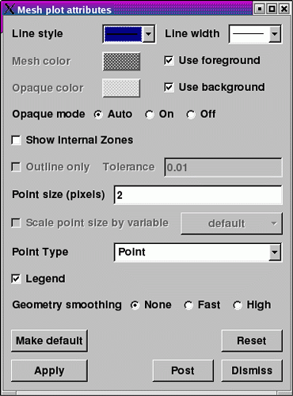
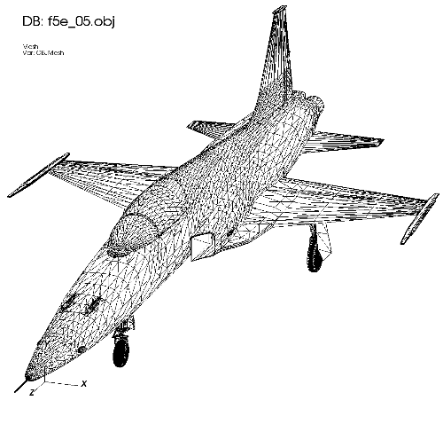

The Mesh plot, shown in figure, displays the computational mesh over which a database's variables are defined. The mesh plot is often added to the visualization window when other plots are visualized to allow individual cells to be clearly seen.
|  |
| Figure 24 |
|  |
| Figure 25 |